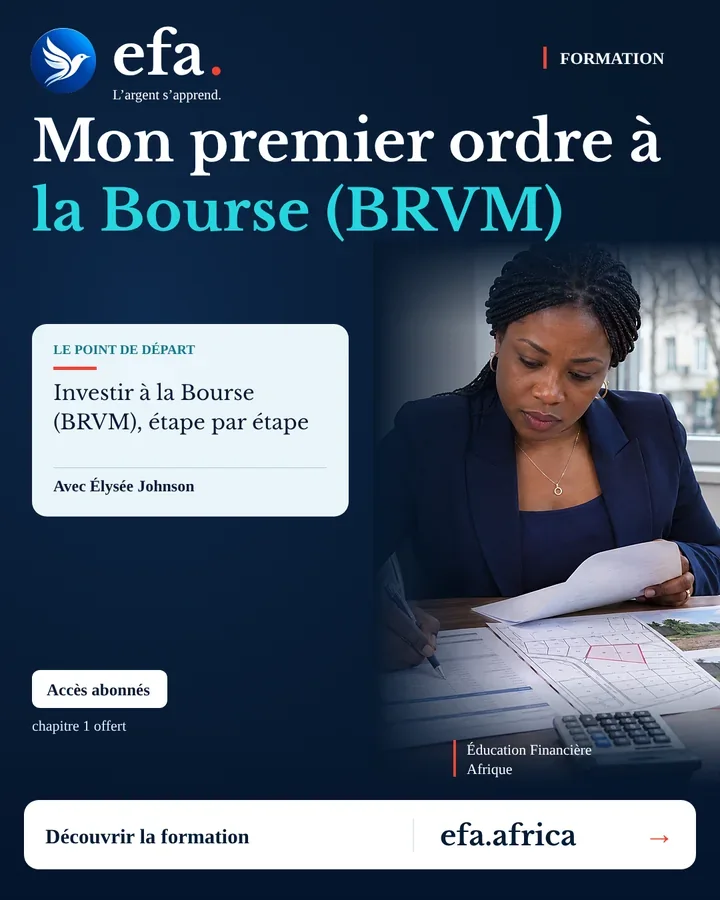
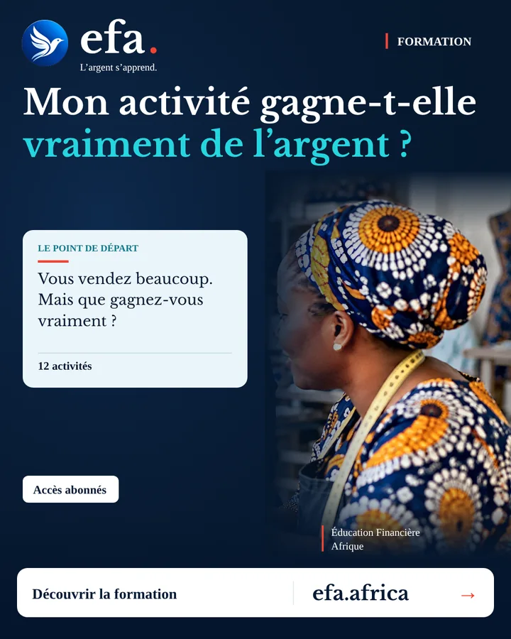

Accueil / Apprendre
Apprendre.Seul, ou accompagné.
Choisissez votre façon d’avancer. Vous pouvez passer de l’une à l’autre à tout moment.
Ma bibliothèque
J’apprends seul, à mon rythme
Gratuit pour commencer. Suivez le parcours dans l’ordre, ou piochez ce dont vous avez besoin aujourd’hui.
Le parcours complet
L’école EFA
Trois cycles, du diagnostic au patrimoine : Fondations, Maîtrise, Patrimoine. Un certificat local à la fin de chacun.
Commencer le parcours →Avant de commencer
Mon diagnostic
Six minutes pour savoir où vous en êtes et par quel module commencer.
Faire le point →Cours gratuit
École de la Bourse
Comprendre la Bourse (BRVM) pas à pas, avant d’acheter.
Ouvrir →Cours gratuit
École de la tontine
Comment marche une tontine, et comment cotiser sans se faire avoir.
Ouvrir →Lire et s’inspirer
La bibliothèque EFA
Les livres résumés par EFA, le musée de l’économie, les parcours qui inspirent.
Ouvrir →À écouter
Le podcast EFA
Des épisodes de quelques minutes pour comprendre l’argent.
Ouvrir →S’entraîner
Le quiz de la semaine
Quelques questions pour vérifier ce que vous avez retenu.
Ouvrir →En histoires
Min’Fin, la série
L’éducation financière racontée en épisodes courts.
Ouvrir →Pratiquer
Tous les outils et simulateurs
Budget, épargne, crédit, retraite, Bourse : appliquer à vos chiffres.
Ouvrir →Être accompagné
Je me fais coacher
Un atelier pour chaque décision, avec vos chiffres. Et quelqu’un pour vous répondre.
 Où est passé mon argent ?Voir son mois, trouver les fuites
Où est passé mon argent ?Voir son mois, trouver les fuites Mon budget à zéroUne mission pour chaque franc
Mon budget à zéroUne mission pour chaque franc
Mon premier ordre à la Bourse (BRVM)Du compte à l’achat, pas à pas
Mon activité gagne-t-elle de l’argent ?Ce qui reste vraimentLes 57 ateliers
Tous les ateliers, par thème
Trois essentiels par thème, puis le reste pour aller plus loin. Des situations d’ici, des exercices concrets.
Choisir un atelier →Coaching
Ateliers avec Élysée Johnson
Être coaché par le fondateur d’EFA, sur votre situation.
Voir les ateliers →En direct
Rendez-vous avec Élysée
Un échange sur votre question, ou le besoin de votre organisation.
Prendre rendez-vous →Les formules
L’abonnement EFA
L’accès aux ateliers, mois par mois.
Voir les formules →À toute heure
Ely, le guide d’EFA
Posez votre question, Ely vous oriente et explique.
Parler à Ely →En groupe
Pour les organisations
Former les salariés, les membres ou les étudiants de votre organisation.
Voir les programmes →